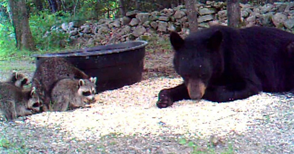

In the first decades after its discovery by the members of the expedition of Christopher Columbus, who were the first Europeans to leave a written record about the species, taxonomists thought the Raccoon was related to many different species, including dogs, cats, badgers and particularly bears.
Carl Linnaeus, the father of modern taxonomy, placed the Raccoon in the genus Ursus, first as Ursus cauda elongata ('long-tailed bear') in the second edition of his Systema Naturae (1740), then as Ursus Lotor ('washer bear') in the tenth edition (1758–59).In 1780, Gottlieb Conrad Christian Storr placed the Raccoon in its own genus Procyon, which can be translated as either 'before the dog' or 'doglike'. It is also possible that Storr had its nocturnal lifestyle in mind and chose the star Procyon as eponym for the species.
